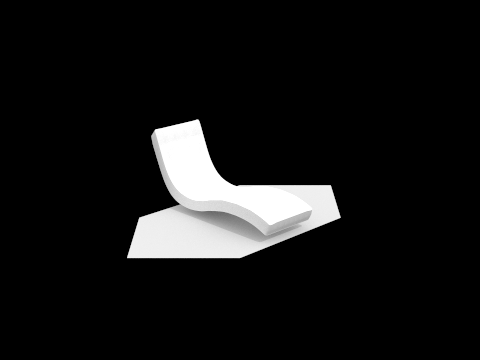
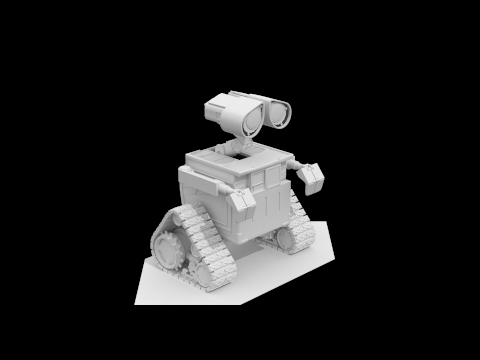
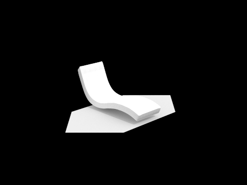
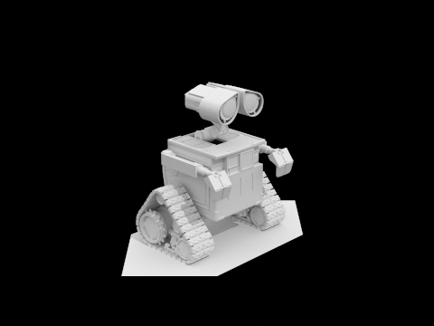

Overview
In this project, I implemented several functions of the rendering pipeline. We started off with ray generation and ray intersections with the scene. This implementation proved to be quite slow until we implemented our bounding volume hierarchy data structure to accelerate ray intersections by a factor of several hundreds. Then we lit up our scene by implementing direct lighting as well as indirect lighting. Lastly, we implemented adaptive sampling to reduce unnecessary sampling on certain parts of the image. This project helped me gain a deeper understanding of a wide variety of topics from Monte Carlo estimators to triangle/plane intersections to lighting calculations and much more.
Part 1
Walk through the ray generation and primitive intersection parts of the rendering pipeline.
We start off with the Camera::generate_ray() function where we transform the image coordinates into camera coordinates (by first calculating the width and height using hFov and vFov and then scaling the given x and y into the camera x and y values). Then we transform the calculated Vector3D(cam_x, cam_y, -1) into world coordinates by multiplying c2w with it and normalizing the vector (this is the direction vector). Lastly, we create the ray and set min_t and max_t.
Next, we implemented PathTracer::raytrace_pixel() where we took num_samples random samples using the ray generation function and gridSampler->get_sample(), averaged the value returned by est_radiance_global_illumination(), and filled in the corresponding pixel in sampleBuffer with the average radiance.
I used the same method for both Triangle::has_intersection() and Triangle::intersect() which was the Moller Trumbore algorithm which gives us the t value and the barycentric coordinates. If t is not within the constraints of r.min_t and r.max_t, then we return false right away. If t is valid, then we check if alpha, beta, and gamma are all between 0 and 1 (inclusive) and add up to 1, which indicates the point is inside the triangle. We also use these coordinates to calculate the normal.
For sphere intersection, I referenced the slide from lecture and solved the quadratic formula for the variable t (ending up with two t values). We choose the smaller t value that is within the bounds of min_t and max_t as our primary t value. The other t value is assigned to t2 (if it’s also within the bounds). To calculate the normal, we plug in our t value into the ray equation to get the intersection point and subtract it from the center of the sphere and normalize the resulting vector.
Explain the triangle intersection algorithm you implemented in your own words.
As mentioned earlier, we used the Moller Trumbore algorithm shown in lecture which gives us the t value and the barycentric coordinates. It was not fully explained how the algorithm is derived but it is essentially an optimization of many cross product calculations. We first check if t is within the constraints of r.min_t and r.max_t. If it isn’t, then we immediately return false. Otherwise, given the barycentric coordinates, we know that the intersection lies in the triangle if alpha, beta, and gamma are all between 0 and 1 (inclusive) and add up to 1.
Show images with normal shading for a few small .dae files.
Balls Coil
Gems
Part 2
Walk through your BVH construction algorithm. Explain the heuristic you chose for picking the splitting point.
My BVH construction algorithm involves a recursive process where at every step, I split the primitives in the current node into a left and right node with the recursive process terminating when the number of primitives in the current node is less than or equal to max_leaf_size.
For the heuristic, I decided to simply split along the longest axis. For the split, I sorted the primitives based on the chosen axis and put the first half of the primitives in the left node and the second half of the primitives in the right node. This process also ensured that there wouldn’t be infinite recursion caused by all of the primitives being split into the left or right node.
Show images with normal shading for a few large .dae files that you can only render with BVH acceleration.
Compare rendering times on a few scenes with moderately complex geometries with and without BVH acceleration. Present your results in a one-paragraph analysis.
bench.dae: 150.2 seconds without BVH, 0.075 seconds with BVH, 2002x speedup
coil.dae: 15.4 seconds without BVH, 0.128 seconds with BVH, 120x speedup
bunny.dae: 79.91 seconds without BVH, 0.114 seconds with BVH, 701x speedup
Based on the testing results, implementing BVH clearly has an immense impact on the speed of intersection tests. With a naive ray intersection implementation, we have to test for intersections with every single primitive in the scene. With BVH acceleration, we only need to test intersections with a few axis-aligned bounding boxes as we traverse down the tree and a small handful of primitives in the leaf bounding boxes that we intersect. The tests above have shown a speedup by a factor of hundreds.
Part 3
Walk through both implementations of the direct lighting function.
Hemisphere direct lighting: for each of the num_sample rays (randomly sampled from the hemisphere), I used the result of the ray intersection to calculate the outgoing light for the ray (original intersection bsdf * the emission of the new intersection’s bsdf * cos(w_in) * 2 * π). After accumulating all of the outgoing light at the original hit point, we divide it by the number of samples.
Importance direct lighting: Unlike hemisphere direct lighting where we randomly shoot rays into the hemisphere (which is inefficient because many rays don’t hit any light sources and it’s basically impossible for the ray to randomly hit a point light), importance direct lighting focuses on shooting out rays at the light sources in the scene. For each light in the scene, we take num_samples (1 sample for point lights because all samples are the same, ns_area_light samples for other lights). For each sample, we first discard the ones where the light is behind the surface of the original intersection. Then we accumulate the outgoing light similarly to above and finally divide by ns_area_light at the end of the function.
Both of these functions required caution with what space each Vector3D was in as well as using EPS_F to avoid intersecting certain things (such as the original intersection when casting a ray to a light source).
Show some images rendered with both implementations of the direct lighting function.
Focus on one particular scene with at least one area light and compare the noise levels in soft shadows when rendering with 1, 4, 16, and 64 light rays (the -l flag) and with 1 sample per pixel (the -s flag) using light sampling, not uniform hemisphere sampling.
l = 1 l = 4
l = 16 l = 64
As the number of rays increases, the soft shadows get less and less noisy. This is because with a smaller amount of rays, there is a higher chance that none of the rays hit the light source causing a harsh black shadow at that pixel. As the number of rays increases, the shadow color converges to the true brightness.
Compare the results between uniform hemisphere sampling and lighting sampling in a one-paragraph analysis.
Uniform hemisphere sampling has much more noise than lighting sampling when we use the same number of rays. This is due to the nature of hemisphere sampling which randomly shoots out rays resulting in many “wasted” rays that do not return any useful lighting contribution. Additionally, it is extremely unlikely for a random ray to hit a point light, essentially making point lights meaningless when rendering with uniform hemisphere sampling. Lighting sampling concentrates on directing rays at light sources which ensures that each ray is meaningful (unless the light source is behind the surface or obstructed).
Part 4
Walk through your implementation of the indirect lighting function.
My indirect lighting function starts off by calculating one_bounce_radiance. Then it runs the Russian Roulette termination “algorithm” to determine if the recursion should stop (it is ensured that there will be at least one indirect bounce if indirect illumination is turned on as per the specs). If the recursion is not terminated, then we get a random w_in and pdf from isect.bsdf->sample_f() and cast a new ray in the direction of w_in. If the ray intersects with an object, then we recursively call at_least_one_bounce_radiance() and multiply the result with the original intersection’s bsdf * cos(w_in) and divide by (pdf * RR) where RR is the probability of continuing the recursion. This value is finally added to the one_bounce_radiance and returned.
Show some images rendered with global (direct and indirect) illumination. Use 1024 samples per pixel.
Pick one scene and compare rendered views first with only direct illumination, then only indirect illumination. Use 1024 samples per pixel. (You will have to edit PathTracer::at_least_one_bounce_radiance(...) in your code to generate these views.)
The left image shows a rendering with only direct illumination. Parts of the shape that are not directly in line of sight to the light source are not lit up at all. In the second image, all of the light comes from indirect illumination (with the exception of the light source itself). This is most obvious in the top parts of the ball as they are not lit up as they are in the first image. These two renderings show how direct illumination and indirect illumination sum up to create realistic lighting.
For CBbunny.dae, compare rendered views with max_ray_depth set to 0, 1, 2, 3, and 100 (the -m flag). Use 1024 samples per pixel.
m = 0 m = 1
m = 2 m = 3
m = 100
At a max depth = 0, the only thing that is lit up is the light source itself. With a max depth = 1, lighting on other objects only comes directly from the light sources. At a max depth = 2, we see a significant change from a max depth = 1 as the overall image becomes much lighter and the black ceiling as well as parts hidden from the light source is now lit up from the reflected light. At a max depth = 3, the image gets even brighter with the bunny now the red/blue colors bleeding noticeably onto the bunny. At a max depth = 100, the image does not change significantly from m = 3 (most likely due to Russian Roulette terminating rays far before 100 bounces). The red/blue colors are even more noticeable on the bunny and on the walls and the image is overall brighter.
Pick one scene and compare rendered views with various sample-per-pixel rates, including at least 1, 2, 4, 8, 16, 64, and 1024. Use 4 light rays.
You will probably want to use the instructional machines for the above renders in order to not burn up your own computer for hours.
spp = 1 spp = 2
spp = 4 spp = 8
spp = 16 spp = 64
spp = 1024
With lower samples per pixel, the image gets more and more noisy. As seen in the image with 1 spp, there is so much noise everywhere and the white walls are just filled with random red and blue pixels. The shadows under the bunny are also very harsh. As we increase the number of samples per pixel, the colors start blending nicely and the shadows become softer.
Part 5
Walk through your implementation of the adaptive sampling.
For my implementation of the adaptive sampling, I kept a running sum of radiance.illum() and radiance.illum() squared. At every samplesPerBatch iteration, I plug in the values for the formulas shown below and determine if enough sampling has been done to accurately estimate the pixel color noise free. If enough sampling has been done, I break out of the sampling loop and save the number of samples used to sampleCountBuffer.
Pick one scene and render it with at least 2048 samples per pixel. Show a good sampling rate image with clearly visible differences in sampling rate over various regions and pixels. Include both your sample rate image, which shows your how your adaptive sampling changes depending on which part of the image you are rendering, and your noise-free rendered result. Use 1 sample per light and at least 5 for max ray depth.
High sampling rate = red
Low sampling rate = blue
https://cal-cs184-student.github.io/sp22-project-webpages-Crazy010517/